본문콘텐츠영역
About Harry Potter
Harry Potter is a film series based on the eponymous novels by author J. K. Rowling.
The series is distributed by Warner Bros.and consists of eight fantasy films,
beginning with Harry Potter and the Philosopher's Stone (2001)
and culminating with Harry Potter and the Deathly Hallows – Part 2 (2011).
A spin-off prequel series that will consist of five films started
with Fantastic Beasts and Where to Find Them (2016),
marking the beginning of the Wizarding World shared media franchise.
Series
-
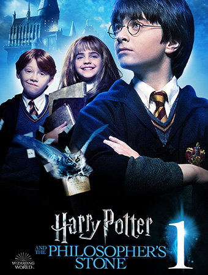
1. Harry Potter and
the Philosopher's Stone (2001) -
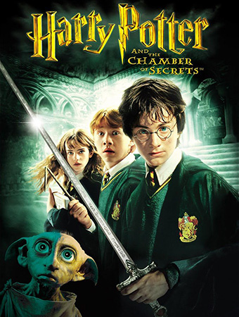
2. Harry Potter and
the Chamber of Secrets (2002) -
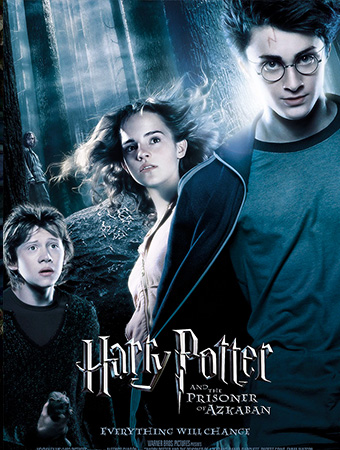
3. Harry Potter and
the Prisoner of Azkaban (2004) -
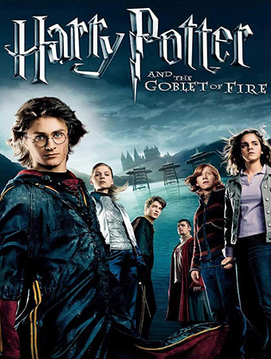
4. Harry Potter and
the Goblet of Fire (2005) -
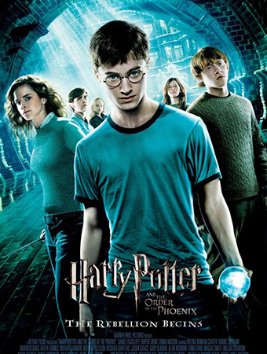
5. Harry Potter and
the Order of the Phoenix (2007) -
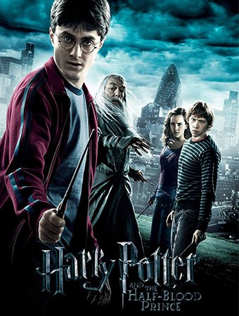
6. Harry Potter and
the Half-Blood Prince (2009) -
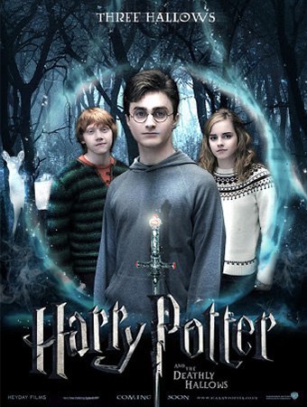
7. Harry Potter and
the Deathly Hallows –Part 1 (2010) -
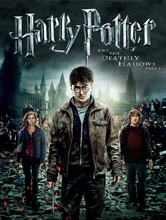
8. Harry Potter and
the Deathly Hallows –Part 2 (2011)
Producer
-
J.K Rowling
Joanne Rowling CH, OBE, HonFRSE, FRCPE, FRSL (born 31 July 1965), better known by her pen name J. K. Rowling, is a British author, screenwriter, producer, and philanthropist. She is best known for writing the Harry Potter fantasy series, which has won multiple awards and sold more than 500 million copies,becoming the best-selling book series in history. The books are the basis of a popular film series, over which Rowling had overall approval on the scripts and was a producer on the final films.
-
Warner Bros. Studios, Leavesden
Warner Bros. Studios, Leavesden is an 80 ha (200 acres) studio complex in Leavesden in Hertfordshire, in southeast England. Though the studios are owned by Warner Bros., all of the studio facilities are available to rent for any production. Since acquiring the site Warner Bros. has opened a public attraction called Warner Bros. Studio Tour London – The Making of Harry Potter, which receives over 6,000 visitors a day at peak times all whilst the site maintains a secure studio space within the same complex.
Character
-
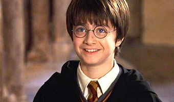
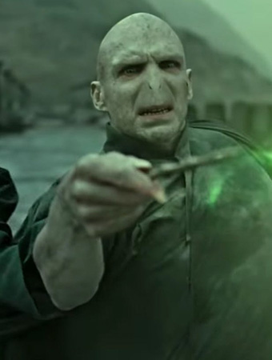
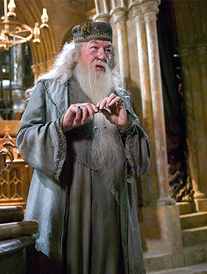
-
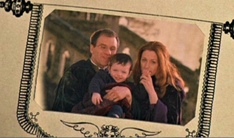
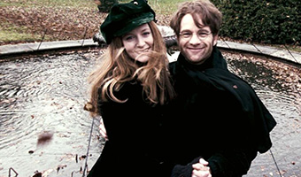
-
- Lily & James Potter
- They were both murdered by Lord Voldemort on Hallowe'en in 1981, while trying to protect their infant son.
- Lord Voldemort
- Lord Voldemort is a sobriquet for Tom Marvolo Riddle, a fictional character and the main antagonist in J. K. Rowling's series of Harry Potter novels.